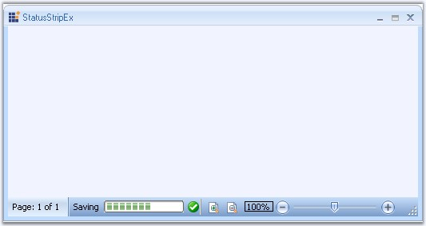

Essential Tools has come up with StatusStripEx control which can be added to the bottom of the Ribbon. It can hold controls like TrackBarEx, ProgressBar, StatusStripButtons, and so on.

Figure 1402: StatusStripEx control Displayed at the Bottom of the RibbonForm
See Also
Creating a StatusStripEx, Smart Tag Options, ColorSchemes for StatusStripEx, SizingGrip Settings
 Creating a StatusStripEx
Creating a StatusStripEx